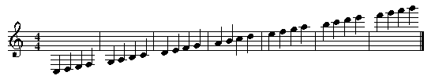

ABC Player Specification
abc.player.Main
should be the entry point of your program, taking an abc music file as a command-line argument.
If you choose a different design instead, then you
must
provide a file called
README.txt
at the top level of your project repository, explaining how a user can run your program and play an abc music file.
Running your program on different music files must not require editing Java source code.
In addition to playing the music on the MIDI synthesizer, your program should print out the abc header information to the console.
The ABC Subset for 6.005
This document provides a high-level, but not necessarily comprehensive, overview of language constructs that your abc player will need to handle. For information on the exact syntax of abc, you should consult:
An abc file consists of two parts: (1) the header , which contains various information about the musical piece, such as its title, composer, tempo, meter, and note length, and (2) the body , which contains a sequence of notes that make up the musical piece.
Header
Each line in the header corresponds to a
field
, and begins with
a single uppercase letter and a colon (
:
), followed by the
content of the field. The following shows an example of what a header
may look like:
X: 3
T: Turkish March
C: W. Mozart
M: 2/4
L: 1/8
K: Am
According to this header, the title of the piece contained in this
file is
Turkish March
, and was composed by a person named
W. Mozart
. The piece is in A minor (
K: Am
), and the default
length of each note in the music is one eighth (
L: 1/8
). Each bar
contains two quarter notes (
M: 2/4
).
The abc standard specifies a large number of fields. You are required to handle only the following subset:
- C: Name of the composer.
- K: Key, which determines the key signature for the piece.
- L: Default length or duration of a note.
-
M:
Meter. It determines the sum of the durations of all
notes within a bar, expressed as a rational number like
4/4or3/8. The special meterC(“common time”) means4/4, andC|(“cut common time”) means2/2. - Q: Tempo. It represents the number of beats of the given length to play per minute.
- T: Title of the piece.
- X: Index number, similar to the track number in a recording. In this project, this field does not carry any meaning, as you are required to parse only one abc file at a time. However, the official standard designates this field to be mandatory in every abc file, and therefore, your parser must be able at least to read it (and may then discard it).
There are several additional requirements on the header:
-
The first field in the header must be the index number (
X). -
The second field in the header must be the title (
T). -
The last field in the header must be the key (
K). - Each field in the header occurs on a separate line.
All fields other than
X
,
T
, and
K
are optional, and may appear
in any order.
-
When the field
Mis omitted, the default meter is 4/4. -
When the field
Lis omitted, a unit note length is set based on the meter. If the meter is less than 0.75, the default unit note length is a sixteenth note. If the meter is 0.75 or greater, it is an eighth note. For example, 2/4 = 0.5, so, the default unit note length is a sixteenth note, while for 4/4 = 1.0, or 6/8 = 0.75, or 3/4= 0.75, it is an eighth note. Notice that if neitherMnorLfields are present, the default note length is an eighth. -
When the field
Qis omitted, the default tempo is 100 beats per minute, where a beat is the default note length given by fieldL. Notice, however, that whenQis specified, it includes its own beat length, and the tempo is not necessarily based onL. -
When the field
Cis omitted, any reasonable string will suffice (e.g.Unknown).
Key Signature
A key signature is a set of
sharps or flats associated with particular notes in the scale. A
sharp
causes every occurrence of that note to be played one semitone
higher
, and a
flat
causes every occurrence of that note
to be played one semitone
lower
. For example, the key signature in the diagram shown on
the right contains three sharps (placed on C, F, and G). Throughout
the piece, every C, F or, G (irrespective of the octave) should
be played one semitone higher. A key of either A major (denoted
K:A
)
or F-sharp minor (denoted
K:F#m
) specifies these three sharps.
Your abc player should handle every major and minor key on this list of keys and their signatures . You should also note that the effect of the key signature can be temporarily overridden with an accidental , which appears immediately left of its target note. Accidentals are described in Body: Accidentals .
Body
Notes
The body of an abc file consists of a sequence of notes separated by bar lines. Middle C is denoted by
Cand the scale of C in this octave is represented by the sequence
CDEFGABThe note C in the next higher octave is denoted by a lower case C
cTherefore, the sequence of notes that represents the scale of C twice, going through two octaves, and starting with middle C is
CDEFGABcdefgab
Notes in the higher octave are denoted by appending an appropriate
number of apostrophes (
'
) immediately after their names. For example,
c'represents C in the two octaves up from the middle C, and
c''
represents C in the three octaves up. Similarly, notes in the octaves
below the middle C can be denoted by appending commas (
,
).
A bar line separates a sequence of notes into segments and is denoted by
|
. A double bar line (
[|
,
||
, or
|]
) indicates the end of a major
section in the music. There are also repeat lines (e.g.
|:
), which
are described in
Body: Repeats
.
As a summarizing example, the following sequence of notes
may be represented by
C, D, E, F,|G, A, B, C|D E F G|A B c d|e f g a|b c' d' e'|f' g' a' b'|]Note Lengths
By default, every note has the length specified in the
L
header
field (and when this field is absent, a length determined by the meter).
The length of a particular note may be increased or decreased by appending a
multiplicative factor to the note. For example, if the default note
length is 1/8 (i.e. an eighth note), then the following sequence of notes
is represented by
A1/4 A/4 A/ A A2 A3 A4 A6 A8| A,1/4 A,/4 A,/ A, A,2 A,3 A,4 A,6 A,8 |]Note that either the denominator or the numerator (or both) in a fractional multiplicative factor can be omitted. An absent numerator should be treated as 1, and an absent denominator as 2. In addition, any apostrophes or commas that indicate the deviation from the middle octave must precede the multiplicative factor.
Accidentals
The effect of the key signature as discussed in
Header
(
K
field) can be temporarily overridden using accidentals. An accidental
can be a sharp (denoted by
^
in abc), a flat (
_
), or a
natural (
=
). A sharp causes a note to be played one semitone higher,
a flat one semitone lower, and a natural
causes the note to be played as if the key were in C without any
accidental. Double sharps (
^^
) and flats (
__
) are also allowed.
An accidental only affects a single octave; for example, the accidental
in the bar
|^C D c C|
would only affect the first and the last C
notes of the bar.
The effect of an accidental on a note lasts through the remainder of the current bar, and can be overridden by another accidental that occurs in the same bar. The effect of the key signature is restored at the beginning of the next bar.
Rests
A rest is denoted by
zand has the same default length as a note. Multiplicative factors have the same effect on rests as they do on notes, but accidentals cannot be applied to rests.
Chords
One or more notes may be played simultaneously in a chord. In abc, a chord is
denoted by a group of notes between square brackets (
[
and
]
):
[CEG]
Notes within a chord may be embellished with an accidental or a multiplicative
factor. If the notes in a chord have different durations, the duration of the
chord is determined by the duration of the first note specified in the chord.
For example, in
[C2E4]G2
, there would first be an E note and a C note playing together,
and then an E note and a G note playing together.
A chord may not contain any rests or tuplets.
Tuplets
A tuplet is a consecutive group of notes that are to be played for a duration
that is either greater or less than the sum of the individual notes within that
group. In abc, a tuplet is denoted by an opening round bracket
(
, the tuplet
number, and the actual notes in the tuplet. For example,
(3GABis a tuplet that consists of three notes, and called triplet .
In this project, we require you to handle ONLY duplets, triplets, and quadruplets. The duration of each type of the tuplets are as follows:
- Duplet: 2 notes in the time of 3 notes
- Triplet: 3 notes in the time of 2 notes
- Quadruplet: 4 notes in the time of 3 notes
For example, a triplet that contains three eighth notes is equal in duration to one quarter note; therefore, each eighth note in the triplet should be played 2/3 the duration of a standard eighth note.
A tuplet may not contain rests, but it may contain chords.
A tuplet may have notes and chords of different lengths. In the case of a triplet, you should play each note or chord for 2/3 of the original duration. For a duplet, 3/2 of the original durations. And for a quadruplet, 3/4 of the original durations.
Repeats
A section of music that is enclosed within
|:
and
:|
is to be
repeated once. For example, in the following fragment of abc,
|: C D E F | G A B c :|the two bars are repeated, so the sequence of notes that your abc player should produce as output is:
C D E F G A B c C D E F G A B c
The begin repeat bar
|:
may be omitted; in this case, the repeat is
from the beginning of a major section (i.e. the bar that immediately follows
|]
),
or the beginning of the musical piece.
A repeated section may have a different ending when it is
played the second time. In abc, alternate endings are indicated using
[1
and
[2
. For example,
|: C D E F |[1 G A B c | G A B B :|[2 F E D C |should be played as
C D E F G A B c G A B B C D E F F E D C
Note that when the repeat is played the second time, the bar that
begins with
[1
is entirely skipped over. Also note that endings may
span multiple bars and need not be the same length.
Multiple Voices
All of the abc constructs that we have discussed so far allow
us to play only a single melodic line. Many pieces of music
(e.g. orchestral or band music), however,
involve multiple
voices
that are played
simultaneously. Multiple voices do not belong to the official abc language
definition, but have nevertheless become a part of the
de facto
standard among abc users.
Your abc player should be able to parse and play multiple voices as defined below. Your abc player is NOT required to be able to play different instruments or have varied timbres.
Voices are listed in the header of an abc file using one or more
field lines that begin with
V
. The content of each voice field is
the identifier for a particular voice, and can be an arbitrary
string. For example, the header
X:0
T: Prelude No. 1
C: J. S. Bach
M:4/4
L:1/16
Q:1/4=100
V: upper
V: middle
V: lower
K:C
says that this piece of music contains three different voices,
labeled
upper
,
middle
, and
lower
. There is no limit on the
number of voices in a piece.
A
V
field line may re-appear in the middle of the body to indicate
that the following sequence of notes belongs to a particular voice,
until another voice field with a different identifier
appears. For increased readability, middle-of-body voice fields
are often placed between
small sequences of bars for
different voices in alternating fashion (as it is normally done in
sheet music):
V: upper
z2 Gc eGce z2 Gc eGce | z2 Ad fAdf z2 Ad fAdf |
V: middle
z E7 z E7 | z D7 z D7 |
V: lower
C8 C8 | C8 C8 |
V: upper
z2 Gd fGdf z2 Gd fGdf | z2 Ae aAea z2 Ae aAea |]
V: middle
z D7 z D7 | z E7 z E7 |]
V: lower
B,8 B,8 | C8 C8 |]However, your abc player should not make any assumptions about the order or frequency of middle-of-body voice fields. For example, instead of interleaving voices as in the previous example, an abc author could write each voice in its entirety under a single middle-of-body voice field:
V: upper
z2 Gc eGce z2 Gc eGce | z2 Ad fAdf z2 Ad fAdf | z2 Gd fGdf z2 Gd fGdf | z2 Ae aAea z2 Ae aAea |]
V: middle
z E7 z E7 | z D7 z D7 | z D7 z D7 | z E7 z E7 |]
V: lower
C8 C8 | C8 C8 | B,8 B,8 | C8 C8 |]The names or labels of the voices might indicate different instruments, for example. However, they have no significance for your music player because you do not need to play different instruments or have varied timbres Your music player only needs to produce one kind of sound, and voices simply allow your player to play multiple melodic lines simultaneously.